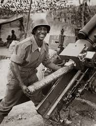

foto mais conhecida.O Brasil teve uma participação fundamental e única na Segunda Guerra Mundial, sendo o único país da América do Sul a enviar tropaspara combater em solo europeu. Inicialmente, o governo de Getúlio Vargas manteve uma posição de neutralidade pragmática, negociando com ambos os blocos. No entanto, após ataques de submarinos alemães a navios mercantes brasileiros no Atlântico e a costura de acordos econômicos com os Estados Unidos — que incluíram o financiamento da Companhia Siderúrgica Nacional em troca da permissão para bases militares no Nordeste —, o Brasil declarou guerra ao Eixo em 1942.
O braço principal dessa missão foi a Força Expedicionária Brasileira (FEB), composta por cerca de 25 mil militares que desembarcaram na Itália em 1944. Sob o lema "A cobra está fumando", os soldados brasileiros, conhecidos como "pracinhas", enfrentaram condições climáticas extremas e terrenos montanhosos rigorosos. A atuação da FEB foi decisiva em batalhas importantes, como a de Monte Castello e Montese, onde demonstraram bravura e competência técnica ao romperem linhas de defesa alemãs que pareciam intransponíveis.
Além do esforço nos campos de batalha italianos, a participação brasileira teve um impacto profundo na política interna do país. O paradoxo de lutar contra ditaduras fascistas na Europa enquanto vivia sob o regime autoritário do Estado Novo acelerou o processo de redemocratização. O retorno dos heróis de guerra fortaleceu os movimentos de oposição, culminando na queda de Vargas em 1945. Assim, o Brasil encerrou o conflito não apenas com prestígio internacional, mas também com os alicerces de sua própria democracia renovados.